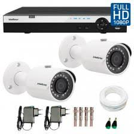

Arme e desarme audivel ou silencioso por controle remoto ou teclado;
Tempo de disparo configurável;
Sensores RF (Dispensa o uso de fios);
Led indicativo;
Controles com design personalizado nas cores azul, rosa ou preto;
Arme automático programável;
Baterias de longa duração;
1 ano de garantia;
KIT com:2 controles,1 sensor de presença,1 sirene e um led indicativo por 400 reais. Kit sem sensores de abertura (portas e janelas, 20 reais cada).
Discadora gsm (opcional): 300 reais.
Kit monitoramento HD

Kit 4 câmeras intelbras em hd 720p IR 30m 1500 reais;
Kit 2 câmeras intelbras em hd 720p IR 30m 1200 reais;
Alcance noturno de até 30m;
Monitore as imagens em tempo real pelo celular. O app ISIC 6 possibilita a entrada no hd para acessar os videos gravados podendo editá-los em qualquer lugar que estiver;
Acesso ao DVR pelo seu televisor com mouse sem fio;
HD de 500GB;
Função antimascaramento com aviso imediato em caso de vandalismo, como cobrir a câmera, quebrá-la ou em caso de rompimento dos cabos;